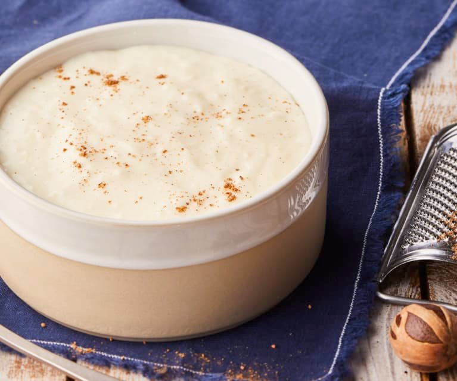

Sauce béchamel express
Ingrédients
4×
- 40 g de beurre
- 40 g de farine
- 500 g de lait
- 0.5 c. à c. de sel
- 2 pincées de poivre
- 2 pincées de muscade

Préparation
Étape 1
Mettre 40 g de beurre en morceaux, 40 g de farine, 500 g de lait, 0.5 c. à c. de sel, 2 pincées de poivre et 2 pincées de muscade dans le bol. Cuire 7 min/90ºC/vitesse 4.
Conseils
- Version avec roux : fondre le beurre 3 min/100ºC/vitesse 1, ajouter la farine 3 min/100ºC/vitesse 1, puis le reste 6 min/90ºC/vitesse 4.
- Sauce Mornay : ajouter 50g de fromage râpé (et éventuellement 2 jaunes d’oeufs et 20g de crème), mélanger 15 sec/vitesse 4.
- Sauce aurore : ajouter 1 cac de concentré de tomate, mélanger 15 sec/vitesse 4.
Résumé
40 g de beurre
40 g de farine
500 g de lait
0.5 c. à c. de sel
2 pincées de poivre
2 pincées de muscade
Cuire 7 min/90ºC/vitesse 4